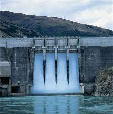
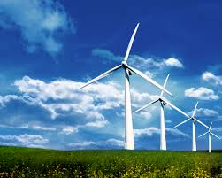

Natural Resource are in plenty why don't we use it!!!
Solar,Hydro,Bio-fuel,Waste Management,etc!!!:
Natural Resources!!! Use it or loose it
 Solar energy is radiant light and heat from the Sun that is harnessed using a range of ever-evolving technologies such as solar heating, photovoltaics, solar thermal energy, solar architecture and artificial photosynthesis.
Solar energy is radiant light and heat from the Sun that is harnessed using a range of ever-evolving technologies such as solar heating, photovoltaics, solar thermal energy, solar architecture and artificial photosynthesis.

Flowing water creates energy that can be captured and turned into electricity. This is called hydroelectric power or hydropower. The most common type of hydroelectric power plant uses a dam on a river to store water in a reservoir.

Wind energy is a form of solar energy. Wind energy (or wind power) describes the process by which wind is used to generate electricity. Wind turbines convert the kinetic energy in the wind into mechanical power. A generator can convert mechanical power into electricity.
Nothing stops a legend !!!
Nothing stops a releasd Arrow !!!
Belive in Nature

Bio-Gas
Biogas typically refers to a mixture of different gases produced by the breakdown of organic matter in the absence of oxygen. Biogas can be produced from raw materials such as agricultural waste, manure, municipal waste, plant material, sewage, green waste or food waste. Biogas is a renewable energy source and in many cases exerts a very small carbon footprint.
Bio-Gas could be produced at home from Cow dung,Kitchen waste etc
Bio-Diesel
Biodiesel is the most common biofuel in Europe. It is produced from oils or fats using transesterification and is a liquid similar in composition to fossil/mineral diesel. Chemically, it consists mostly of fatty acid methyl (or ethyl) esters (FAMEs). Feedstocks for biodiesel include animal fats, vegetable oils, soy, rapeseed, jatropha, mahua, mustard, flax, sunflower, palm oil, hemp, field pennycress, Pongamia pinnata and algae. Pure biodiesel (B100) currently reduces emissions with up to 60% compared to diesel Second generation B100.
Second-Generation Bio fuels
Second generation biofuels, also known as advanced biofuels, are fuels that can be manufactured from various types of biomass. Biomass is a wide-ranging term meaning any source of organic carbon that is renewed rapidly as part of the carbon cycle. Biomass is derived from plant materials but can also include animal materials.
How to give back to Nature ?
Natural ways to produce Electricity
Lots of ways are available to produce Electricity
Solar Devices
Lots of solar devices are available in market like ,
- Solar cooker
- Solar vehicles
- Solar vehicles
- Solar Water Heater
- Solar Lamp
- etc..
Waste Management
Waste management begins with doing segrigating the waste at source.